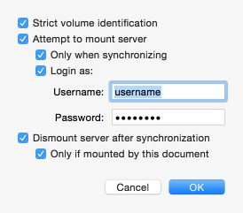
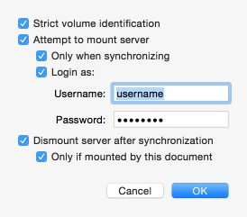

ChronoSync allows you to choose both a left target and a right target. A target is simply a collection of files that will be synchronized. It is typically a folder but can be an entire hard drive. It can also be a package.
Additionally, ChronoSync supports drag and drop. Open a Finder window or select a folder, or volume, from your desktop and drag it to the desired target. You can drop the folder, resulting in the file path appearing in the appropriate box. You may also drag in a volume icon if you wish to synchronize an entire hard drive.
ChronoSync provides options for mounting targets. These options vary depending on whether you've mounted a locally attached drive or a network share.
Strict volume identification: If the source and destination have the same name, you can turn this setting ON and ChronoSync will differentiate the two by comparing several low-level properties.
Attempt to mount volume/Attempt to mount server: If this setting is checked, ChronoSync will attempt to mount the volume or server when the document loads (and if the volume or server is available).
Only when synchronizing: The mount will only be attempted when synchronizing.
Login As: ChronoSync will attempt to log in to the server with the provided username and password.
Dismount volume after synchronization/Dismount server after synchronization: If checked, ChronoSync will dismount the volume or server after synchronization completes.
Only if mounted by this document: The volume or server will only be dismounted if originally mounted by the ChronoSync document.
Assert volume ownership: Turning this setting ON asserts the setting of the volume's "Ignore ownership" property. This is very handy when you have a system that tends to forget this setting. A couple notes: It will be disabled and forced to ON/Enabled if the sync is a bootable backup. Second, the option is only available if you have root access to the target i.e. "Local Volumes (Admin Access)" or a remote ChronoAgent.
Allow SmartScan: Enabling this option allows ChronoSync to use the SmartScan feature, if it's available. NOTE: If you intend to use SmartScan, you still need to turn it ON in the file/folder options section of the sync document editor.
Aggressive Mode: Setting this option causes SmartScan to operate even faster at the expense of disabling some safeguards for recognizing certain kinds of (rare) file system events that may cause SmartScan to miss some changes.
Locally Attached Drive OptionsNetwork Share Options 
Targets can be custom named. If, for example, you are synchronizing your laptop (left target) to an external drive (right target), you may want to name your tagets laptop and external, respectively.


Note: This custom name appears in other areas of ChronoSync as well.